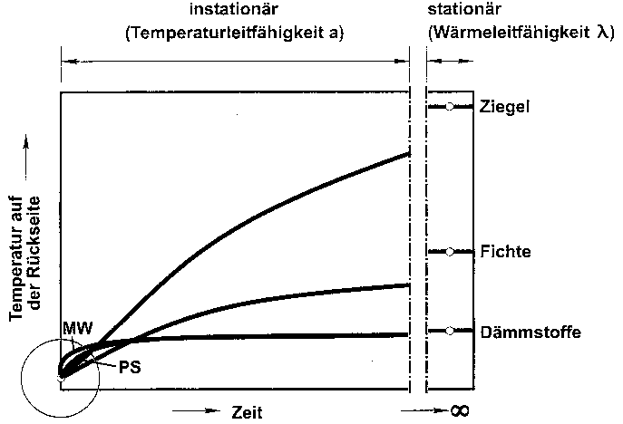

BAU.DE
> Forum > Energiesparendes Bauen / Niedrigenergiehaus
> 464: Heute gabs den Beweis: Dämmung mindert Energieeintrag
BAU.DE > Forum > Dach > 36: Dachdämmung
à la Konrad Fischer ?? Suche Streit ( :-))) ) !
BAU.DE
> Forum > Bauphysik > 112: Lichtenfelser Experiment im Fernsehen - ARD
Sendung Globus am 3.4.02
BAU.DE
> Forum > Bauphysik > 122: Lichtenfelser Experiment im Fernsehen II
Mitschrift
des ARD-Fernsehbeitrags (mit Prof. Meier, Prof. Gertis und K. Fischer: "Zwang
zum Energiesparen: Pfusch am Bau?"
BAU.DE
Forum Fußbodenheizungen / Wandheizungen 279-16: Pro
und Contra Wandheizung und Fußbodenheizung
iavg133
- Zur Energiesparfrage
DIMaGB.de
- Infobereich: Bereich Bauphysik: Dämmt
Dämmung etwa nicht? forum.DIMaGB
id=285013 (Bumann)
Konrad Fischer: Kosten- und energiesparend InstandsetzenDiskussion
dazu
dach-info.com
- Diskussion über das Lichtenfelser Experiment
Google
Diskussion: Radon, Konrad Fischer und andere Zerfallsprodukte
Haustechnikdialog
- Forum > 193
Haustechnikdialog:
> 235: Verschmutzung von Luftleitungen
http://www.haustechnikdialog.de/forum.asp?thema=8763
- Welchen Heizungstyp? -
mit pros and cons rund um Fischer/Meier
Bauphysikalische Zusatzinfo: Energieeinsparung
im Bestand - Grenzen und Möglichkeiten Dämmen
wir uns in die Sackgasse?
DIMaGB.de
- Infobereich: Schimmel, richtig heizen und lüften
(1)
- inkl. Interview mit Konrad Fischer
Deutscher
Siedlerbund e.V.: Was bringt uns die Energieeinsparverordnung?
Interview
mit Konrad Fischer
Das
Energiespar-Interview mit Konrad Fischer (pdf)
news://news.t-online.de/abnnun%242pi%2401%241%40news.t-online.com
- Aufklärung wirkt - wenigstens bei Bauherrn
Das
"Lichtenfelser Experiment" - Forum archiFee
Ziegelphysik
und andere urbane Mythen aus dem Baubereich - Forum archiFee
Ziegelphysik.de - die Webseite des anonymen E. Lange - immer profimäßiger betrieben lt. denic von Daniel Rinninsland der Firma lueftungsnet.de
Erfahren
Sie, welche Auswirkungen der heutzutage praktizierte Dämmwahn hat
Das
Forum - Haustechnik-Dialog - Dämmung mit Styropor: Diffusionsverhalten?
Das
Forum - Haustechnik-Dialog - Feuchte Luft im Kellerraum ! Was tun ?
groups.google.de...
- Dicke Mauern dämmen?
Und hier die Bestätigung aus Finnland, daß Mauerwerk viel besser ist, als ein k-Wert je rechnen kann: Impact of the Exterior Wall Structure on the Energy Efficiency of Building in Deutsch dank Kollege Bumann
Zum Abschluß - die Stellungnahme zur Kritik der "etablierten Bauphysiker" am Lichtenfelser Experiment:
1. Beim Lichtenfelser Experiment wurde eine 4 cm Platte nur 10 Minuten bestrahlt. Daraus dürfe nicht auf das ganztägige Verhalten bzw. auf die Heizperiode geschlossen werden.

"Bild 13 Zeitlicher Temperaturverlauf beim Lichtenfelser "Experiment", wie er hätte wirklich ablaufen müssen."(Originalbetitelung).
Im Text (Seite 11 ff. der Tagungsunterlagen) weist Prof. Gertis dann darauf hin, daß bei unserer "Lichtenfelser" Grafik nur die beiden "Meßpunkte "Start" und "10 Minuten" mit einer Geraden verbunden" wurden (Stimmt! Auf die Darstellung der Zwischenergebnisse haben wir verzichtet, da es uns nur auf das 10-Minuten-Ergebnis ankam.), was fälschlicherweise "Linearität" unterstellt. Aufheizvorgänge verlaufen aber (vgl. "Bild 13") nicht linear. Außerdem ergibt sich nach Gertis offenbar eine Angleichung der Temperaturen bei den "Dämmstoffen", sie werden letztlich gleichwarm. Polystyrol bietet lt. dieser Meinung gegenüber Mineralfaser also keine nennenswerten Vorteile. Und Holz ist am Ende dem Ziegel scheinbar doch etwas unterlegen bei der Temperaturableitung. Das wird die Ziegelphysiker freuen, hatten sie doch auf so ein schönes Ergebnis der (nun völlig zu Recht!) etablierten Bauphysik nie zu hoffen gewagt.
Weitere Zitate aus dem Text von Prof. Gertis:
"Der stationäre Endwert der Kurven ist von der Wärmeleitfähigkeit, also vom Dämmwert, abhängig, der übrige nicht-lineare Kurvenverlauf hängt nicht von der Wärmeleitfähigkeit (lambda), sondern von der Temperaturleitfähigkeit a = λ/c x ρ ab. ... Man erkennt, daß die Temperaturleitfähigkeit z. B. von Holz relativ klein und von Mineralwolle relativ groß ist. ... Der Dämmstoff mit hoher Temperaturleitfähigkeit (Mineralfaser) heizt sich schnell auf, der mit niedriger Temperaturleitfähigkeit (Polystyrol) langsamer. Der Endzustand beider Dämmstoffe ist der gleiche, weil beide Dämmstoffe die gleiche Wärmeleitfähigkeit von 0,04 W/mK besitzen. Analoges gilt für die Stoffe Holz und Ziegel. Ziegel heizt sich schneller auf als Holz, weil er eine höhere Temperaturleitfähigkeit (16 cm2/s) als Holz (4 cm2/s) besitzt. Der stationäre Endzustand von Ziegel und Holz ist verschieden, weil beide Stoffe eine unterschiedliche Wärmeleitfähigkeit aufweisen. Beim "Lichtenfelser Experiment" wurde in willkürlicher Weise ein sehr kleines "Zeit-Fenster" von 10 Minuten herausgegriffen, das in Bild 13 als Lupen-Kreis markiert ist. Man ersieht, daß sich in diesem winzigen Zeitfenster in der Tat die linearisierten Gradienten ergeben. Die Messung selbst dürfte deshalb im Rahmen der sonstigen Messungenauigkeit sogar richtig sein; die Interpretation und die gezogenen Schlußfolgerungen sind hingegen falsch. ..."
Gottseidank hat nun Prof. Karl Gertis, allseits als Papst der Bauphysik verehrt und obendrein ein wirklich (!) respektabler Komponist und Musikant, unsere Unzulänglichkeiten endlich korrigiert. Wer im Winter draußen Schnitzel auf der schnell durchheizten Außenwand grillen will, weiß nun, womit er bauen muß.
Nachtrag: Weil nicht sein darf, was nicht sein soll, hat nun kurz vor Anlaufen der Druckmaschinen für den Tagungsband ein Mitarbeiter von Prof. Gertis (in dessen nichterreichbaren Abwesenheit lt. Aussage VBN-Redaktion am 19.5.03) die Grafik ins Gegenteil umgearbeitet. Hier nun der (auf welchen Druck wohl verkehrte?) Bildauszug aus dem dennoch bemerkenswerten VBN-Info Sonderheft "Topthema WärmeEnergie":

Es muß schon schwer sein, IMMER die richtige Kurve zu kriegen. Heute so, und morgen so, und übermorgen wieder anders. Je nachdem, was gerade angesagt wird, was sich eben am nettesten gerade (bzw. krumm) "rechnet". Na denn: simuliert mal schön weiter! Mir tun diese Leute wirklich leid. Bei mir und in der ganzen Praxis am Bau heißt es nämlich nach wie vor: Dämmstoff dämmt praktisch nicht wie versprochen. Und auch die neuesten Heizkosten-Abrechungsdaten von Prof. Fehrenberg nähren nur diese Ungeheuerlichkeit.
Wobei das Fraunhofer in seiner Versuchanstalt / Außenstelle Holzkirchen unter dem Projektleiter Dr.-Ing. H. Werner im Januar 1983 eine höchst interessante Meßreihe über 25 Tage bei einer durchschnittlichen Außentemperatur von 2,5 oC durchführte. Dabei wurde ein Versuchsbau mit gleichen Räumen aber verschiedenen Außenwänden beheizt und dann die unterschiedlich in den Räumen verbrauchte "Heizleistung" verglichen. Ich habe die im mir vorliegenden Bericht betr. "Untersuchungen über den effektiven Wärmeschutz ..." B Ho 8/83-II vom 5. Juli 1983 grafisch dargestellten Ergebnisse der besonders interessierenden Räume 3, 4a und 5 in der folgenden Grafik mal zusammengefaßt:

Dabei handelt es sich um folgende Außenwandkonstruktionen mit
oder ohne Dämmung aus "Polystyrol-Hartschaum":
| Wandaufbau gem. Bericht Blatt 39 | k-Wert |
| Außendämmung (23 cm) mit Fenster | 0,16 |
| Außendämmung (10 cm) mit Fenster | 0,32 |
| monolithisch 49 cm mit Fenster | 0,46 |
Ei, ei, ei! Was ist denn da herausgekommen? Auf Blatt 25 des Berichts dürfen wir dazu lesen:
"Der Vergleich der Heizenergieverbräuche in einem längerfristigen Meßzeitraum [Meßperiode für obige Grafik: "25 Tage, Jan. 1983", durchschnittliche Außentemperatur: "2.5 °C"] ergab, daß die Räume mit den zusatzgedämmten Außenwandkonstruktionen (Außen- und Innendämmung mit Polystyrol-Hartschaum) nicht die erwarteten niedrigen Heizenergieverbräuche aufwiesen, wie sie entsprechend ihres niedrigen k-Wertniveaus im Vergleich zu den übrigen Räumen haben sollten."
Das wird dann passend zu "theoretischen Vergleichsrechnungen" auf "besondere Wärmebrückeneffekte" geschoben.
Und trotzdem wird immer weiter das Wunder in die Welt gesetzt, daß trotz solcher eindeutiger und hochoffiziöser Niederlagen der k-Wert-Theorie Dämmstoffe zum wirtschaftlichen Energiesparen beitragen könnten. Wo wäre denn dafür je ein echter heiztechnisch sauber gemessener Praxis-Beweis über eine ganze Heizperiode als Vergleich zwischen Ungedämmt und Gedämmt vorgelegt worden? Ich kenne außer den umfangreichen Daten des ö.b.u.v. Sachverständigen Prof. Jens P. Fehrenberg keinen! Sie vielleicht?
Daß die Ziegelindustrie als Auftraggeber der Untersuchung inzwischen selber Dämmstoffe in ihre Luftziegel stopft, ist klar. Man muß sich immer der vorherrschenden Meinung anschließen, wenn man nicht ausgebuht werden will. Und wer will das schon? Außerdem: Es kann halt nicht sein, was nicht sein darf.